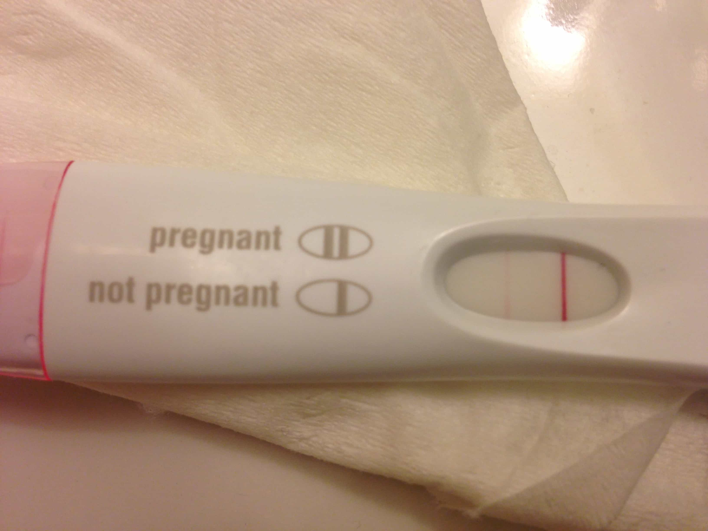

< < < Back
How A Dark Triad Woman Took My Friend For A Ride – Return Of Kings
I’m no expert in Dark Triad traits but I know enough to realize when a female exhibits these signs and this chick had it in spades. Unfortunately for a friend of mine, he didn’t realize it until it was too late.
For those who aren’t familiar with “Paul”, I mentioned him near the end of this article…
One of my best friends is a white guy I’ve known for nearly 20 years. He’s a tall, great looking guy with a great job. Every Anglo-slut’s dream. When we go out for a night on the town he consistently pulls quality chicks much easier than I do, even though my game level is much higher than his.
I sought his insight for this column, then gave a little more detail about him in my column about our weekend in Sin City:
“Paul” is a tall, good looking dude I’ve known since my college days….
…he’s a stone cold assassin and red pill to the core.
Las Vegas is where this story begins when our friend “Norm” whom we’ve both known for almost 20 years, dragged us to a singles meet atop a rooftop bar across from the MGM Grand and I told that story in my Vegas column.
During my first “at bat” with Lois. From left to right: “Lois”, yours truly, some blonde chick
The long and the short of how this started is that the only good looking girl there was a solid 8 who was an exotic looking chick (Hawaiian and Filipino) with a great body. Paul and I decided to make it a competition to see which one of us could bag her first. When he took a sizable lead, I switched from PUA to wingman to help him close the deal.
Paul and I before we met “Lois”
We were thwarted by an unexpected cock blocker with a neckbeard wearing a wannabe fedora but eventually Paul was able to overcome this obstacle and release the kraken on “Lois.” Now that we’ve got our back story, let’s pick it up from there.
After Las Vegas
Although Paul and Lois lived on opposite coasts, they were still able to see each other regularly and things got pretty serious between them. They’d go look at real estate on her visits and talk about plans for the future. In fact, a general rule of thumb when they would meet is that she flew east to him (rather than the opposite) because of their plans to move her out there as they set a tentative timeline for around May of ‘16.
But as with any long distance relationship (or any relationship) there were several things boiling beneath the surface that started to make their way into their conversations and things eroded quickly.
Red flags
From the very beginning, Paul was concerned with how private Lois was. That is, she didn’t talk much about her friends or her general circle of influence.
Another red flag was that all of her friends and work colleagues seemed to be men. Her website (she owns a small clothing line for crossfit and weightlifting athletes) featured nothing but her and a bunch of dudes.

Let me ‘help’ you with your form
He finally asked her about it a few months later and she told him they were people who helped her with her website and friends from the gym. Paul also saw that one of her feeds was littered with interactions with a guy she eventually admitted was her ex boyfriend.
Between the weekend trips with her group of ‘friends’ and the consistent back and forth with her ex, Paul had serious doubts about Lois’ loyalty. What started out as simple conversations about his concerns turned into fights and eventually they split. But she wasn’t going down without a fight so she pulled a major stunt to keep him attached.
Brain cancer
Yep, you read right. Lois told Paul she had stage 3 brain cancer. At the time Paul believed her. Even though they’d just broken up, he still had strong feelings for her so they got back together so that she could enjoy ‘what little time she had left.’
But when he offered to fly her to his city where a local hospital had a great reputation for treating cancer patients, she declined saying she didn’t want to burden him with her problems and that she would deal with it herself, with her friends, and family as a support system.
Hindsight being 20/20, Paul realized that he’d never seen any proof of her illness. No x-rays, no documentation, no nothing. Lois ‘forgot her medication at home’ on visits after her diagnosis.
Paul’s no idiot but when a man’s judgment is clouded by emotion, his discernment is greatly impaired—red pill awareness or not. Hell, I’m as guilty as any man out there for believing a woman’s bullshit.
That said, they broke up soon after on account of the same issues. The games, secrecy, and mistrust were too much for Paul to stick around even if he did believe Lois was terminally ill. He may have had his doubts about her sickness but things got so bad that it was all but forgotten when they cut ties for the second time.
Paul’s major mistake
A few months after the break up Paul and “Doug” took another trip to Vegas around the same time we all did last year. And wouldn’t you know it, the suddenly cancer free Lois made herself available for another weekend of debauchery.
Paul took full advantage of this and the two of them had what appeared to be no strings attached sex for a few days. When all was said and done, they both chalked it up to a little fun between two people for old time’s sake. No harm, no foul right?
Afraid not. A few weeks later Lois face timed him and showed him a positive pregnancy test. Paul’s as careful as anyone out there but he admitted to me that he didn’t use condoms the last time they hooked up before Vegas and this was the result.

Paul knew he should have been using these
At this point it was time to quit playing games and both knew it. For better or worse there was now a kid involved so they decided to give the relationship a serious try without all the bullshit from before.
But the arguments soon started up again and this time around it had escalated to knock down drag out name calling fights. It didn’t take long for them to break up and this time she blocked him on all her social media accounts.
Paul was at a crossroads. He had to choose between being an absentee father or visiting his kid every so often and in both cases, he’d be paying child support. Luckily for him, Doug came to his rescue before this situation got out of hand.
The bailout
A quick refresher on Doug from the ‘15 Vegas Squad:
“Doug” is a good friend of Paul’s whom I’d never met before this trip. Paul told me about some of the red pill knowledge Doug had inadvertently dropped in the past so I knew he’d be a solid guy to roll with. Upon meeting him it didn’t take long to discern that he was as advertised.
Doug has as much red pill knowledge as any of us here and had his doubts about Lois from the jump. Though he spent the night at the Planet Hollywood poker tables the night Paul and I played Batman vs. Superman (with Lois as the prize), he had a front row seat to everything that happened between he and Lois after that fateful night in Sin City.
Like myself, Doug knew her social media privacy was a tell tale sign of nefarious intentions. So back when he’d learned that Lois had blocked Paul from seeing her posts, he followed her on an old Instagram account he hardly used and saw something that blew this whole thing wide open…
Wedding pictures.
It gets better. Despite the social media blackout, Paul still followed a few of Lois’s friends on Instagram where he discovered her in some of their pictures and a video of her in a bikini dancing and obviously not pregnant.
Up until this point Lois was still trying to convince Paul that she was still pregnant and that she wanted to start over. She was making plans to come to see him as recently as Thanksgiving while sending emails about how much she missed him even though she was married.
The day Paul confronted her about it (mid December) was the same day Doug showed him the wedding pictures. Lois explained the pregnancy away with a miscarriage story. But she’d have been 7 months along when the bikini pictures were taken so it’s doubtful she was ever pregnant in the first place.

Either way, the jig was up. The earliest wedding pictures were posted around the middle of August so that’s likely around the time she was married. The last time Paul and Lois saw each other was the third week of July which meant he was fucking her less than 3 weeks before she said her vows.
It’s also worth noting that Paul had never seen exactly where she lived the entire time they were together, even during the Vegas hookup (she said she had a friend over so they couldn’t use her place). Looking back, it’s because she was probably living with her fiance.
The best case scenario is that there was a 4 or 5 month overlap between Paul and her beau. But the book of red pill conditioning says she was probably in a relationship with her soon to be hubby the entire time she was with Paul.
We all get got
I’ll be the first to say that Paul should have exercised better judgment. Getting into a long distance relationship with a chick you met on a rooftop bar at a singles meet in Las Vegas is never good idea and I’ve told him that.
Be that as it may, Lois played psychological games with him on a level he’d never experienced in his life. She did and said just enough to keep him interested while keeping certain things hidden which drove him crazy.
At some point we’re all going to get got. Men like Paul and myself are tougher cookies to crack but some women are much more versed in the art of sexual warfare. Paul’s fortunate he got out clean and because of this experience he’s more red pill aware than he was before. Such is the life of an awakened man.
Be sure to check out Donovan’s weekly podcast The Sharpe Reality on thesharpereality.com every Tuesday.
Read Next: How To Identify The Dark Triad Female